编辑齐推荐—超便宜、超好用的美容品！
这篇是送给预算不多的学生党的。其实试用品多多的美容编辑也有一直心水的平价美容品，这些产品能在与贵价产品的PK中脱颖而出，那必须是有两把刷子滴~
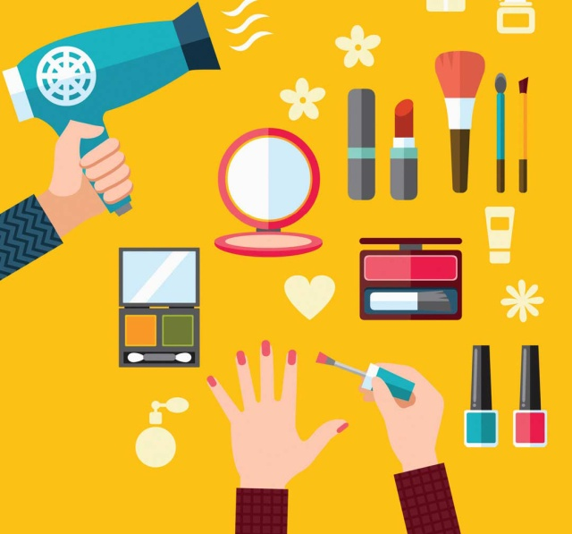
01
美容总监张骞文推荐
欧莱雅唇部及眼部卸妆液 ¥100/150ml
多少年来一直是习惯把眼唇卸妆和脸部卸妆分开来使用的，毕竟专用产品卸妆力更强，质地也更温和。选上这瓶产品是因为当年该集团有人说过一句：“这瓶卸妆液的配方其实跟XX牌（该集团旗下一个高端美容品牌）的产品差不多，效果也一样，但便宜好多呢！”于是……我就真的比较了一下，的确也是差不多……可能这类产品功效比较基础，相较于精华素面霜这些科技含量没有那么高吧！我已经用过好多瓶，基本上没有卸不干净的彩妆，我戴隐形眼镜的眼睛也没有感觉过刺激，而且用量大也不会心疼呢！
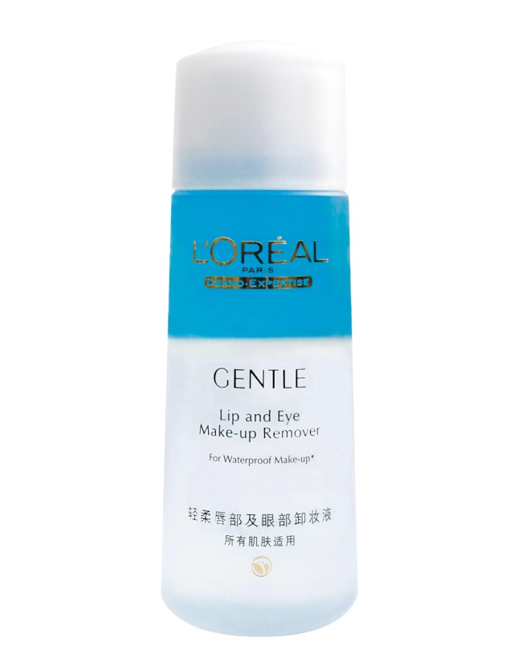
Cetaphil润肤霜 约¥80/566g
上次从美国回来，害我箱子快100斤的罪魁祸首（之一）就是它。好家伙！这一罐就一斤多，每次都感觉怎么用都用不完……可是真心好，绝对是全家老小皆宜、四季都适合抹还不心疼的身体保湿恩物。我自己不喜欢太香的身体霜，这款就完全没有味道，而且质地滋润但不黏腻。对于因为皮肤干燥而容易出现敏感、湿疹的皮肤来说，这款可是很多皮肤科医生推荐的辅助治疗产品呢！再加一句，孕可用，娃可用！
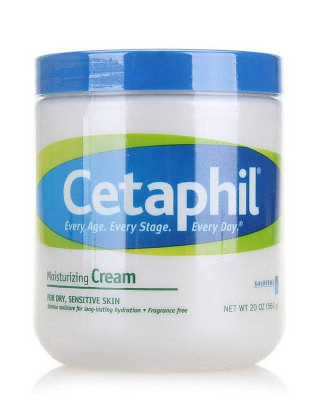
02
美容副总监王萌稚推荐
Maybelline NY绝色持久雾感唇棒 ¥109
近期要找粉哑的唇膏，就它了。首先它上色非常浓郁，一笔就能完全显色，笔形的管身，拿在手上有在用油画棒画图的感觉。妆效是粉质亚光，但却不干。另一头的粗大海绵头非常有用，你可以用尖头来擦拭不完美的线条，也可以用大面积在唇上重新画一遍，吸去浮层，唇上留下的颜色会非常持久，就算是喝水说话，也还有些颜色。这好用度，完全对得起这价格。
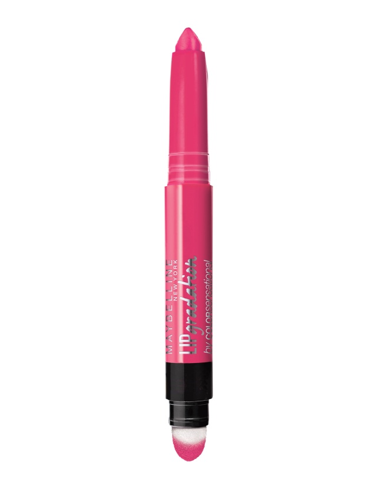
水之密语净澄水活洗发露 ¥36/200ml
我只想要瓶清洁力强，洗后发丝又不干得涩手，能保持头皮干爽时间长一点的洗发水，不需要那么多的功能，而这瓶洗发水是意外的惊喜。它针对硬水地区的钙离子残留，起泡强，脏头发哪怕洗第一遍也有丰富的泡沫，容易冲洗，冲洗完后头发也不涩，头皮保持干爽时间能多上半天，perfect！
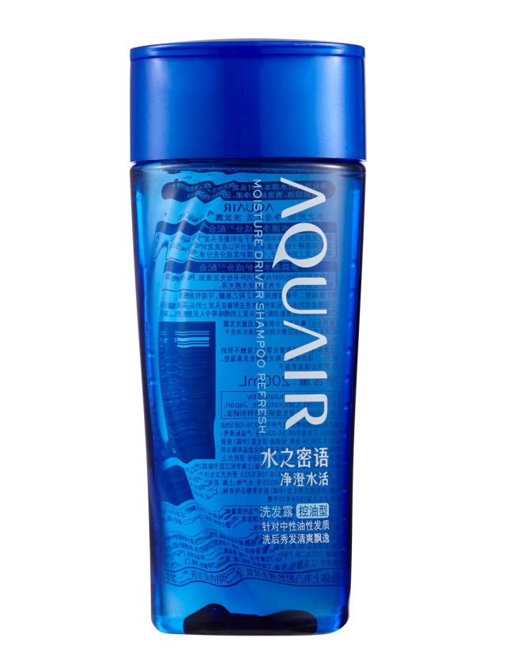
03
资深美容编辑李曾怡推荐
Sofina透美颜保湿啫喱乳 ¥190/50m
混油皮会很喜欢的一款保湿品，啫喱质地但有适度油分，冬天用不干也不会搓泥。温和控油，油皮到了下午也不会出现明显暗沉。
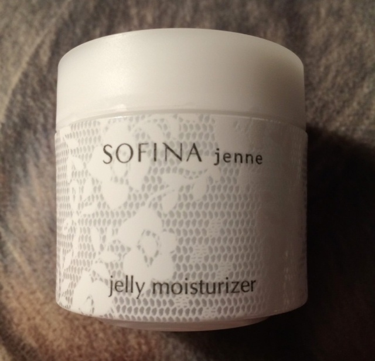
Origins水源畅饮夜间密集修护面膜 ¥25/10ml
这种单次使用的面膜胶囊设计我很喜欢，可以充分保证每次的有效用量，价格又不贵。这款就是夜间睡眠面膜，一个胶囊的量够在脸和脖子厚厚敷一层，适度按摩后就不粘了，整晚密集保湿，第二天起来感觉整个皮肤都水水的！
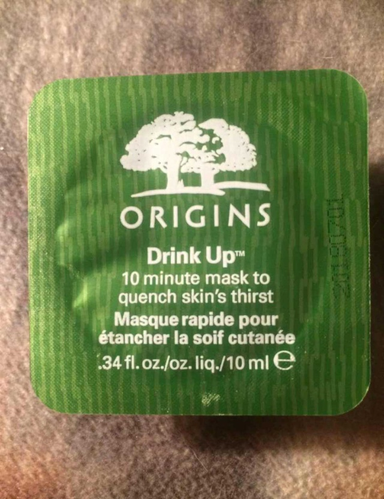
04
资深美容编辑萧洁雯推荐
Bath & Body Works樱花味身体润肤霜 约¥85/226g
冬季最困扰我的护肤问题绝对离不开全身的皮肤干燥发痒，尤其对于像我天生属于干性皮肤来说，如果洗完澡后不涂护肤霜的话，双腿的皮肤就细纹满布，严重时候因为发痒而抓伤皮肤也是平常事。这支来自美国的身体护肤品牌的护肤霜不但质地够厚实，滋润度极佳，特别适合皮肤属于干性的人使用，涂完后很快吸收的同时渗透力真的好的无话可说，不像某些产品涂完后像没涂一样滋润度只维持十分钟便消失，翌日早上起来皮肤还是柔润的，喜欢它的原因还有它带淡淡的樱花香味，清新不刺鼻，有时候在品牌官网上订购还可以低至3美元的优惠价便可以买到，当然，邮费另计。如果有亲朋到美国加拿大等地旅游的话，这绝对是最佳的伴手礼之一。
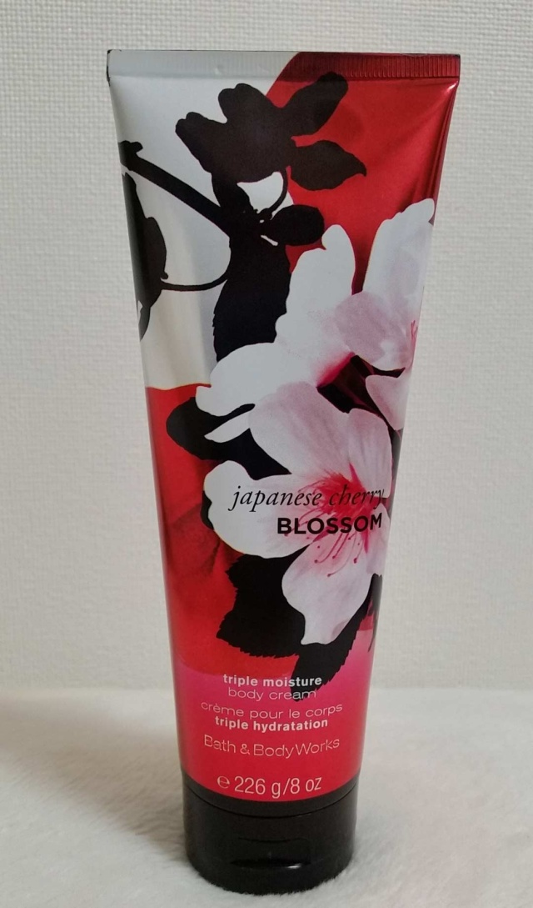
Country & Stream蜂蜜护唇液 约¥30/10g
这绝对是我作为美容编辑自己掏钱买过最多的护唇液，没有之一。还记得几年前在东京的Tokyo Hands百货店里看见这新品推广，当时因为被那可爱的小熊和蜜蜂的外包装设计所吸引而买了，谁知从此我无法离开它！我之所以如此爱用它首先因为它带淡淡的蜂蜜甜香，感观上先给我滋润的好感，涂在唇上它带透明光泽，所以即使哪天忘带唇膏出门，光涂上它也能即时令唇纹隐形最少50%，双唇看起来就是很饱满嫩嫩的。至今已用了不下十支八支了，大家如有兴趣，可在各大日本药妆店买到。
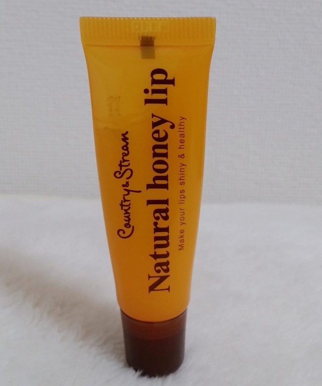
05
美容编辑孙莉推荐
ZA耀目多彩眼影#GD241 ¥118
要说物美价廉，肯定少不了ZA，这个学生党最爱的品牌之一那么招人喜欢不是没有原因的。这个眼影盒粉质顺滑好涂抹，涂抹出来的光泽感又细腻高级，高光色，重点色，过渡色每个色号搭配的四个颜色实用又禁用。按照粉盒后标注的涂抹方法简单上手，手残族都能轻松驾驭。按照妆容需求，清淡自然能上班，隆重美艳能晚宴。关键是！盛惠149大元，我手里那盒每天都用块一年了还只是少了薄薄一层，绝对物美价廉量又足。
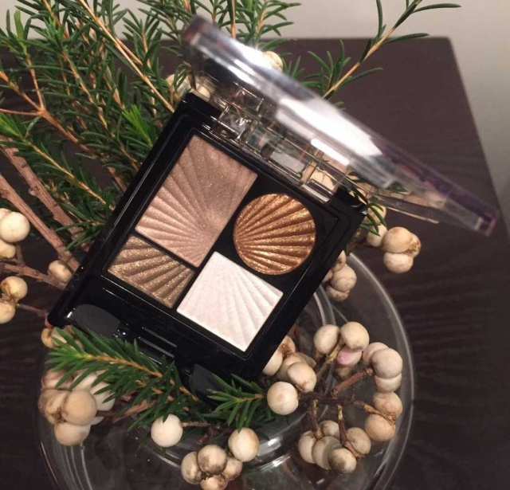
Innisfree流光溢彩唇膏 ¥120
红唇近两年一直在流行，人人都涂的时候怎能才能比别人涂的好看这就是本事了。红唇光泽感太强容易显得太low，纯哑光吧又不是人人都驾驭的了，这支唇膏完美找到了平衡。涂抹以后柔润低调的光泽感显得嘴唇饱满又柔软，长久持色不脱妆，最重要的是滋润感非常好，在干燥环境内也能长久保持嘴唇的滋润，实在是冬天的一大恩物。
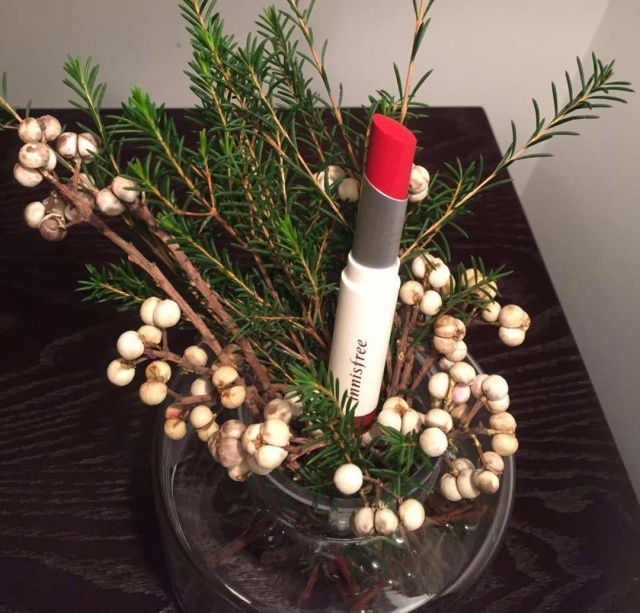
06
Vogue时尚网美容频道主编黄珊推荐
Carmex草莓味润唇膏SPF15 约¥16
第一次收到这只润唇膏，居然是在淘宝买东西卖家送的赠品（可见是有多便宜），可是一试用就爱上了。蜡质基底，保湿滋润效果持久，不是很容易脱落要不停补涂的那种，还有SPF15的防晒指数，夏天天热膏体也不会融化（比冬天会稍软一点）。体积比一般的润唇膏都小，开架产品，也就十来块人民币一只。
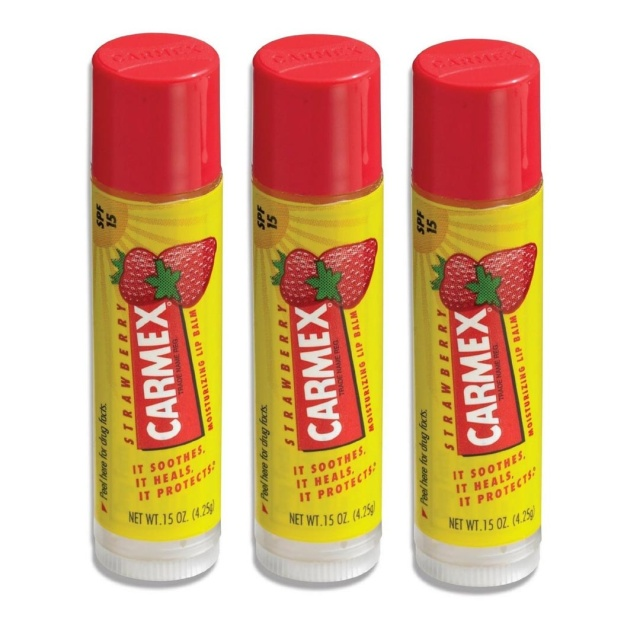
Kate造型三色眉粉 ¥119
一盒三色，眉粉、鼻影二合一，美容编辑人手一盒。对于掌握不好轻重的化妆新手来说，用它画出的眉毛没有眉笔那么生硬，伪装自然的“浓眉”。
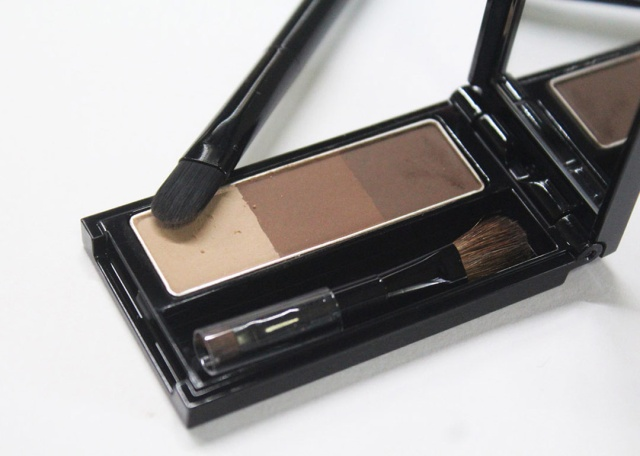
07
Vogue时尚网资深美容编辑赵昱推荐
Canmake膏状腮红 CL06号 约¥40
身为油皮对于腮红最大的烦恼就是脱妆问题了，一般到了下午，腮红都会不翼而飞，所以在买这款腮红时打中我的点就是因为它是膏状的，持久力和保湿效果都会更好，实际使用下来确实也是如此，更赞的一点是妆效极为自然，淡淡的红晕不仅显得气色好而且也让肤色变亮了。
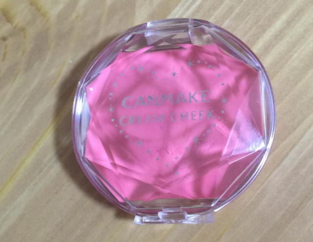
Blistex 唇膏 约¥20
我的嘴唇天生就容易脱皮，尝试了各种唇膏都没办法解决问题，这款经典小蓝罐唇膏是朋友送的礼物，本来只是随意涂涂，结果却发现对于改善脱皮问题有非常好的效果，我都是晚上厚厚地把它敷在嘴唇上，第二天擦掉即可。
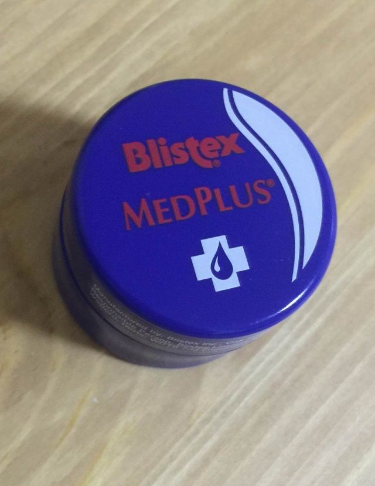
08
Vogue时尚网美容编辑周仲推荐
Chapstick润唇膏 约¥15
这款润唇膏是我一个压箱底的绝技，我不能接受油性润唇膏过于油腻的感受，所以用来用去，还是这个润唇膏长久无法抛弃。这个品牌是美国惠氏制药集团旗下的产品，国内曾经进过一段时间，现在是怎么也无法找到了，唯有每次出国时带回来。润而不腻是所有用润唇膏的人最希望得到的感受，无论是润唇效果，还是涂哑光唇膏前用来打底，都绝不会让人失望。
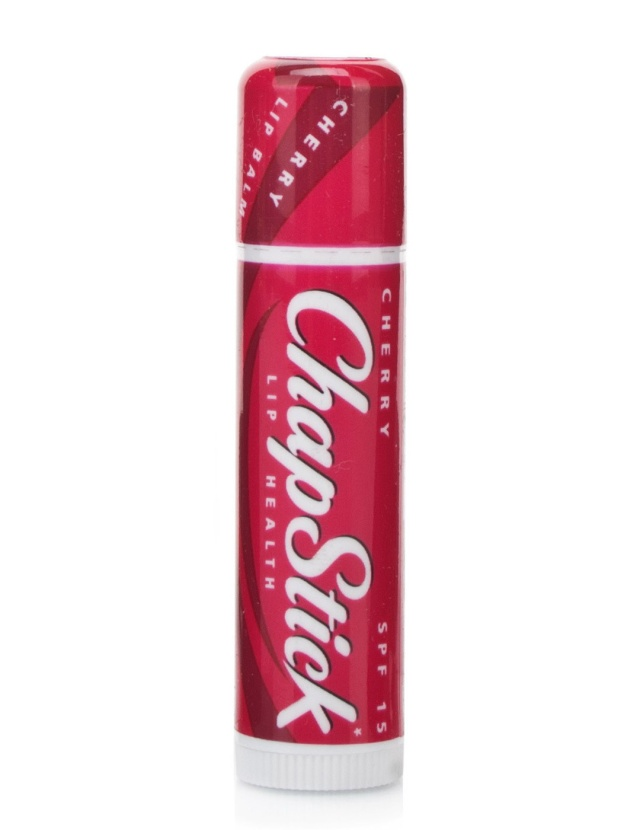
Aupres欧珀莱丝柔精致眉笔 ¥130
坦白说，最开始用这根眉笔，绝对是用来救场的。临时发现没有眉笔了，才翻出来用，却意外地发现非常好用，结果就是一直用到现在。自动头免得你要去处理，天长日久居然将以前认真对待眉笔的我养出了“懒”病。坦白说，就省了非要去去日本背眉笔的麻烦，易上色还不晕妆，130元的价格，作为眉笔，它可是非常出色的。
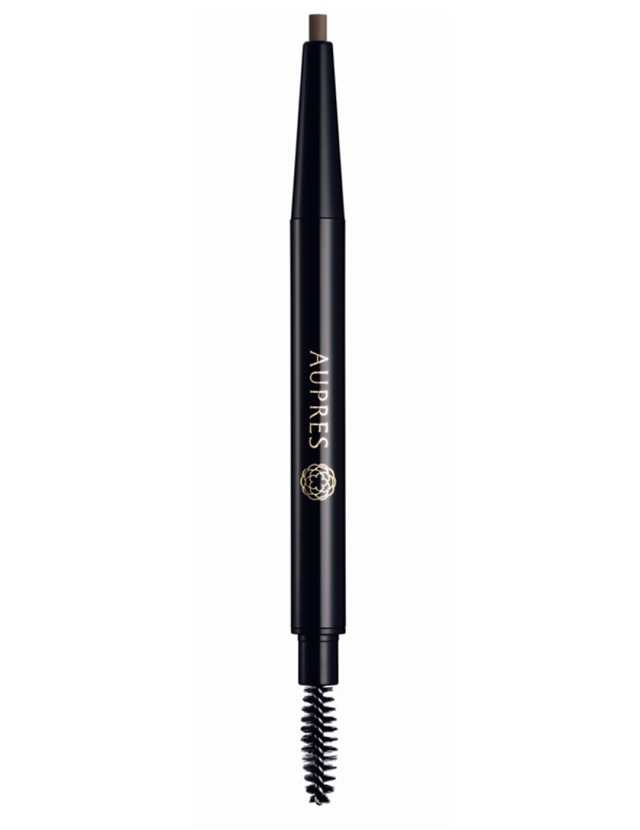
编辑们呕心的推荐，你还满意吗？